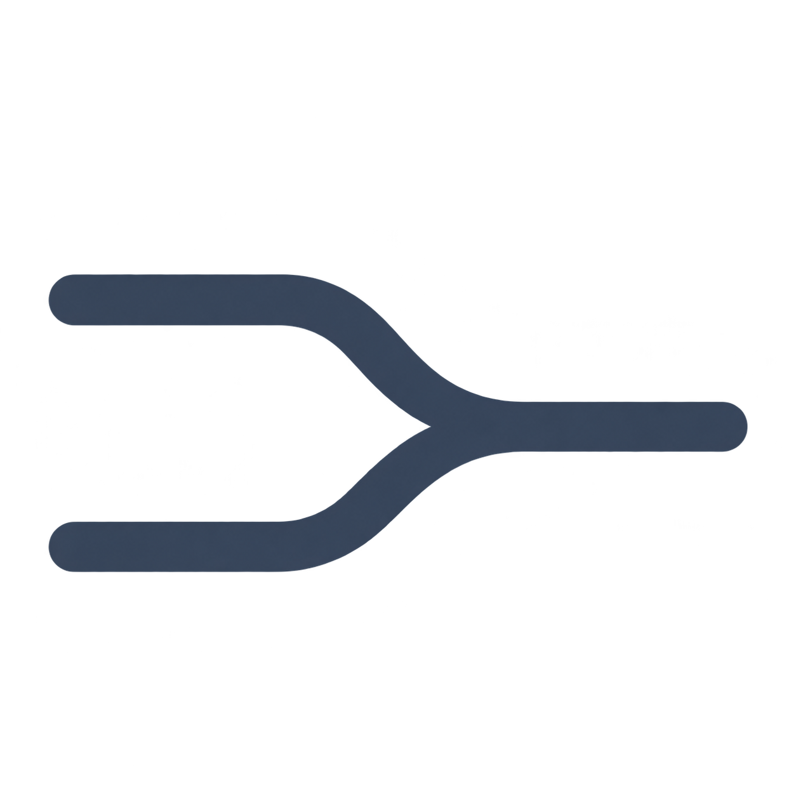

مشاريعك في مكان واحد
اجمع المحادثات والمهام والنتائج، مع إدارة أسماء المشاريع وأرشفتها واستعادتها.

سِلْكنظّم مشاريعك، راجع المهام، وشغّل Codex بحسابك المحلي.
تنزيل النسخة المحمولة أو نزّل المثبّت بدلاً منهااجمع المحادثات والمهام والنتائج، مع إدارة أسماء المشاريع وأرشفتها واستعادتها.
راجع المهام المقترحة واعتمد ما تريد تشغيله، ثم راجع النتائج قبل قبولها.
تُحفظ المشاريع والمحادثات محلياً. تتصل طلبات النماذج بمزوّدها عبر الإنترنت.
يمكن تخطي الإعداد والدخول دون اتصال. ربط Claude غير متاح بعد.
نسخة تجريبية غير موقّعة رقمياً. لم تُختبر على جهاز آخر بعد.
قارن SHA-256 للملف الذي نزّلته مع البصمة المقابلة له.
e519c3068b9dd97793a3cc54e877502b030d0001faea63dbf28bd429e30f09f216374dcbc020318beff21bbe481b3fb7df8158ab1e3957a1c3f65d0a406adb25